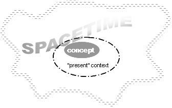
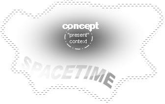
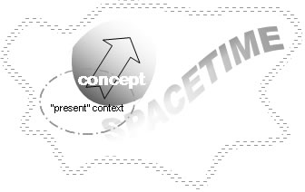
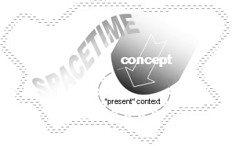
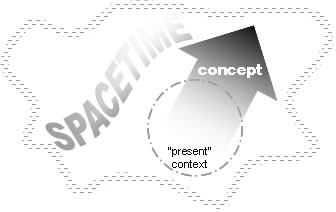
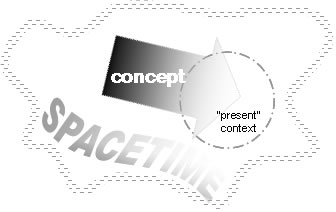

В этой главе мы обсудим те морфологические категории, которые являются обязательными для форматива и применяются как к именным, так и к глагольным формативам. Другими словами, те морфологические слоты из Раздела 2.3 выше, которые грамматически требуют выражения с помощью словоизменительных аффиксов, а не являются факультативными. Конкретные категории, которые мы обсудим: Конфигурация, Аффилиация, Перспектива, Экстенсия, Сущность, Версия, Функция и Контекст.
Чтобы понять концепцию отношения множества и квантификации существительных в Новом Иткуиле (т.е. то, что в других языках называют единственным, множественным числом и т.д.), необходимо проанализировать три отдельные, но связанные грамматические категории, называемые Конфигурация, Аффилиация и Перспектива. Эти концепции чужды другим языкам. Хотя они имеют дело с семантическими различиями, которые носят количественный характер, эти различия обычно проводятся на лексическом уровне (т.е. через выбор слова) в других языках, а не на морфологическом уровне, как в Новом Иткуиле.
В частности, Конфигурация имеет дело с физическим сходством или отношением между членами референта существительного в группах, коллекциях, наборах, ассортиментах, расположениях или контекстуальных гештальтах, определяемых внутренним составом, разделимостью, компартментализацией, физическим сходством или структурой компонентов. Это лучше всего объясняется и иллюстрируется с помощью аналогий с некоторыми английскими наборами слов.
Рассмотрим английское слово «дерево» (tree). В английском языке одно дерево может стоять отдельно вне контекста или быть частью группы деревьев. Такая группа деревьев может быть просто двумя или более деревьями, рассматриваемыми как категория множественного числа, основанная только на количестве, например, два, три или двадцать деревьев. Однако природа деревьев такова, что они существуют в более релевантных контексту группировках, чем просто числовые. Например, деревья могут быть одного вида, как в «роще» (grove) деревьев. Группировка может быть ассортиментом разных видов деревьев, как в «лесу» (forest), или встречаться в беспорядочном хаосе, как в «джунглях» (jungle).
В качестве другого примера можно рассмотреть английское слово «человек» (person). Хотя люди могут встречаться в простых числовых группировках, таких как «(один) человек» или «три человека», чаще можно встретить слова, обозначающие людей, которые указывают на различные группировки, такие как «группа» (group), «собрание» (gathering), «толпа» (crowd) и т.д.
Сегментация и объединенная компонентная структура являются дальнейшими конфигуративными принципами, которые различают связанные слова в английском языке. Отношения между car (машина) и convoy (конвой), hanger (вешалка) и rack (стойка), chess piece (шахматная фигура) и chess set (шахматный набор), sentry (часовой) и blockade (блокада), piece of paper (лист бумаги) и sheaf (стопа/кипа), girder (балка) и (structural) framework (каркас), а также coin (монета) и roll of coins (стопка монет) — все это примеры этих принципов.
Другой тип контекстуальной группировки существительных встречается в бинарных наборах, особенно в отношении частей тела. Эти бинарные наборы могут состоять из двух идентичных референтов, как в паре глаз, однако чаще они являются противоположными или «зеркальными» (т.е. взаимодополняющими) наборами, как конечности, уши, руки, крылья и т.д.
Семантические различия, подразумеваемые приведенными выше примерами, поскольку они относятся к различным ассортиментам деревьев или людей, достигаются путем склонения основы слова «дерево» или «человек» в одну из двадцати различных конфигураций. Дополнительные семантические различия на основе цели или функции между отдельными членами набора затем могут быть сделаны с помощью Аффилиации (см. Раздел 3.2 ниже) и с помощью определенных аффиксов. Например, после того как слова «лес» или «толпа» были образованы от «дерева» и «человека» с помощью Конфигурации, слова «сад», «рощица», «команда» или «моб» могут быть легко образованы с помощью аффилиации и аффиксов.
Категория Конфигурации состоит из объединения трех отдельных факторов: Плексичности, Разделимости и Сходства.
На основе вышеизложенного существует в общей сложности двадцать конфигураций, обозначаемых с помощью консонантного аффикса CA в Слоте VI форматива. Обратите внимание, что помимо Конфигурации, этот аффикс CA также указывает Аффилиацию, Перспективу, Экстенсию и Сущность основы. Двадцать конфигураций показаны ниже, каждая со своим консонантным аффиксом, который появляется в Слоте VI форматива:
| Униплекс (УПК) | Дуплекс (ДПК) | ||||
|---|---|---|---|---|---|
| Код | Описание | Аффикс | Код | Описание | Аффикс |
| УПК | униплекс | — * | ДПК | дуплекс | s |
| MSS | мультиплекс/подобный/отдельный | t | DSS | дуплекс/подобный/отдельный | c |
| MSC | мультиплекс/подобный/соединенный | k | DSC | дуплекс/подобный/соединенный | ks |
| MSF | мультиплекс/подобный/слитый | p | DSF | дуплекс/подобный/слитый | ps |
| MDS | мультиплекс/неподобный/отдельный | ţ | DDS | дуплекс/неподобный/отдельный | ţs |
| MDC | мультиплекс/неподобный/соединенный | f | DDC | дуплекс/неподобный/соединенный | fs |
| MDF | мультиплекс/неподобный/слитый | ç | DDF | дуплекс/неподобный/слитый | š |
| MFS | мультиплекс/размытый/отдельный | z | DFS | дуплекс/размытый/отдельный | č |
| MFC | мультиплекс/размытый/соединенный | ž | DFC | дуплекс/размытый/соединенный | kš |
| MFF | мультиплекс/размытый/слитый | ẓ | DFF | дуплекс/размытый/слитый | pš |
* Униплекс обозначается отсутствием аффикса Конфигурации; если все пять аффиксов CA имеют «нулевые»/стандартные значения, форма CA имеет вид -l-.
Примеры различных конфигураций:
Blöfêi onţlilu.
'криволинейное.поступательное.движение'-дин/объект-мдс-асс/вп «Основа.0-‘автомобиль’-ста/объект-инд
«Водитель вел машину по серии поворотов разной крутизны.»
В то время как категория Конфигурации из предыдущего раздела различает отношения между отдельными членами набора с точки зрения физического сходства, физических связей и количества компонентов-сущностей, категория Аффилиации действует для различения отношений членов в терминах субъективной цели, функции или выгоды. Аффилиация действует синергетически в сочетании с Конфигурацией, чтобы описать общее контекстуальное отношение между членами набора. Подобно Конфигурации, значения существительных или глаголов в различных аффилиациях часто влекут за собой лексические изменения при переводе на английский язык.
Возвращаясь к нашему более раннему примеру со словом «дерево», мы видели, как группа деревьев одного вида становится рощей в конфигурации MSC. Слово «роща» подразумевает, что деревья выросли естественным образом, без какой-либо конкретной цели или функции в отношении человеческого замысла или использования. С другой стороны, рощи деревьев могут быть посажены по замыслу, и в этом случае они становятся садом. Мы видели, как деревья, встречающиеся как естественный ассортимент разных видов, называются лесом. Однако такие ассортименты могут стать полностью хаотичными, демонстрируя беспорядочный разброд с точки зрения субъективного человеческого замысла, становясь таким образом джунглями.
В качестве другого примера мы видели, как слово «человек» становится группой или собранием, которые нейтральны в отношении субъективной цели или функции. Однако применение чувства целенаправленного замысла порождает такие слова, как команда, в то время как отсутствие цели приводит к слову толпа.
Существует четыре аффилиации: консолидативная, ассоциативная, коалесцентная и вариативная. Подобно Конфигурации, Аффилиация также обозначается как часть аффиксного комплекса CA в Слоте VI форматива. Аффикс Аффилиации составляет первый аффикс, показанный в комплексе CA в Слоте VI, непосредственно перед аффиксом Конфигурации. Подробности четырех аффилиаций объяснены ниже вместе с их аффиксами.
Консолидативная аффилиация показывается нулевым аффиксом, т.е. отсутствие аффикса Аффилиации в слоте VI указывает на консолидативную аффилиацию. Эта аффилиация указывает, что отдельные члены конфигурационного набора являются естественно возникающим набором, где функция, состояние, цель или выгода отдельных членов неприменимы, нерелевантны или, если применимы, являются общими. Она отличается от ассоциативной аффилиации ниже тем, что роль отдельных членов набора не определяется субъективно человеческим замыслом. Примеры: ветви деревьев, роща, груда камней, несколько человек, облака.
Консолидативная — это также аффилиация, обычно применяемая к существительным в униплексной конфигурации, когда о них говорят нейтрально, поскольку существительное в униплексе определяет одну единственную сущность без ссылки на набор, поэтому понятие «общей» функции было бы неприменимо. Примеры: мужчина, дверь, ощущение тепла, лист. Что касается глаголов, консолидативная подразумевала бы, что действие, состояние или событие происходит естественно или нейтрально в отношении цели или замысла.
Примеры:
Ассоциативная аффилиация показывается аффиксом -l- в начале Слота VI, непосредственно за которым следует аффикс Конфигурации. Обратите внимание, что если этот аффикс является единственным аффиксом, показанным во всем комплексе CA Слота VI, то он вместо этого показывается отдельным аффиксом -nļ-. Ассоциативная аффилиация указывает, что отдельные члены конфигурационного набора разделяют одну и ту же субъективную функцию, состояние, цель или выгоду. Ее использование можно проиллюстрировать, взяв слово «солдат» в мультиплексной конфигурации и сравнив его английские переводы при склонении для консолидативной аффилиации (= группа солдат) и ассоциативной (= отряд, взвод). Именно это различие между консолидативной и ассоциативной отличало бы иначе эквивалентные склонения слова «дерево», переводя их соответственно как роща и сад.
Ассоциативная аффилиация также может использоваться с существительными в униплексной конфигурации, чтобы обозначить чувство единства среди чьих-то характеристик, целей, мыслей и т.д. Например, слово «человек», склоненное для униплекса и ассоциативной аффилиации, переводилось бы как целеустремленный человек. Даже такие существительные, как камень, дерево или произведение искусства, могли бы быть склонены таким образом, субъективно переводясь как хорошо сформированный камень, дерево с внутренней целостностью, «сбалансированное» произведение искусства.
Что касается глаголов, ассоциативная означает, что действие, состояние или событие происходит по замыслу или с определенной целью. Различие между консолидативной и ассоциативной можно было бы использовать, например, с глаголом «повернуться» в предложении Я повернулся к окну, чтобы указать, было ли это без особой причины или из-за желания выглянуть наружу.
Примеры:
Коалесцентная аффилиация показывается аффиксом -r- в начале Слота VI, непосредственно за которым следует аффикс Конфигурации. Обратите внимание, что если этот аффикс является единственным аффиксом, показанным во всем комплексе CA Слота VI, то он вместо этого показывается отдельным аффиксом -rļ-. Коалесцентная аффилиация указывает, что члены конфигурационного набора разделяют дополнительные отношения в отношении своих индивидуальных функций, состояний, целей, выгод и т.д. Это означает, что, хотя функция каждого члена отличается от функций других членов, каждый служит для достижения некоторой большей единой роли. Например, слово, переводящее английское набор инструментов, было бы словом «инструмент» в конфигурации MDS (мультиплекс-неподобный/отдельный) (из-за различного физического вида каждого инструмента) и коалесцентной аффилиации, чтобы указать, что каждый инструмент имеет свою особую, но взаимодополняющую функцию для обеспечения строительной или ремонтной деятельности. Другим примером было бы слово «палец», склоненное в конфигурации MSC (мультиплекс-подобный-соединенный) и коалесцентной аффилиации, переводимое как пальцы на руке (обратите внимание на использование конфигурации MSC, чтобы подразумевать физическую связь между каждым пальцем через кисть). Дальнейшим примером было бы использование коалесцентной со словом «(кусок) еды», чтобы обозначить сбалансированную трапезу.
Коалесцентная естественно чаще всего появляется в сочетании с дуплексной конфигурацией, поскольку бинарные наборы имеют тенденцию быть дополнительными. Она используется, например, для обозначения симметричных бинарных наборов, таких как части тела, обычно указывая на различие «левая/правая рука» как зеркальное отражение, например, уши, руки, пара крыльев. Пары, которые обычно не различают такое дополнительное различие (например, глаза), тем не менее, могут быть факультативно помещены в коалесцентную аффилиацию, чтобы подчеркнуть двустороннюю симметрию (например, левый и правый глаз, функционирующие вместе).
Что касается глаголов, коалесцентная означает связанную, синергетическую природу составных действий, состояний и событий, которые составляют большее целостное действие, состояние или событие. Она накладывает структурную схему на действие, состояние или событие, где отдельные обстоятельства работают вместе дополнительным образом, чтобы составить общую ситуацию. Она использовалась бы, например, чтобы различать предложения Он путешествовал по Юкону и Он отправился в Юкон, или Я придумал план и Я разработал план.
Примеры:
Вариативная аффилиация показывается аффиксом -ř- в начале Слота VI, непосредственно за которым следует аффикс Конфигурации. Обратите внимание, что если этот аффикс является единственным аффиксом, показанным во всем комплексе CA Слота VI, то он вместо этого показывается отдельным аффиксом -ň-. Вариативная аффилиация указывает, что отдельные члены конфигурационного набора различаются по субъективной функции, состоянию, цели или выгоде. Различия между членами могут быть разной степени (т.е. составлять «размытое» множество в отношении функции, цели и т.д.) или полностью противоречить друг другу, хотя следует отметить, что вариативная не использовалась бы для обозначения противоположных, но дополнительных различий между членами набора (см. коалесцентную аффилиацию ниже). Таким образом, она использовалась бы для обозначения мешанины инструментов, всякой всячины, случайного сборища, разрозненной группы, неблагополучной пары, какофонии нот, беспорядка из книг, коллекции в беспорядке. Она действует с существительными в униплексе, придавая значения, такие как человек, не ладящий с самим собой, плохо сформированный камень, хаотичное произведение искусства, ситуация «правое-левое».
Что касается глаголов, вариативная указывает на действие, состояние или событие, которое происходит по нескольким причинам или целям, и эти причины или цели более или менее не связаны друг с другом. Этот смысл, вероятно, можно передать на английском только через перифраз, как в Она купила дом по разным причинам или Мое присутствие на вечеринке служило нескольким целям. С не-униплексными конфигурациями использование вариативной аффилиации может описывать довольно сложные явления; например, предложение с использованием конфигурации MSS, такое как Свет мигает в сочетании с вариативной, означало бы, что каждая вспышка света сигнализирует о чем-то ином, чем предыдущая или последующая вспышки.
Примеры:
Перспектива — это ближайший эквивалент в Новом Иткуиле категории Числа в большинстве естественных языков (т.е. единственное, множественное число, собирательное и т.д.). Существует четыре перспективы: монадическая, аггломеративная, номическая и абстрактная, показываемые соответственно аффиксами Слота VI [нулевой] (с отдельным альтернативным вариантом -l), -r-, -w- (с отдельным альтернативным вариантом -v) и -y- (с отдельным альтернативным вариантом -j). Аффикс Перспективы идет последним в последовательности аффиксов, содержащихся в комплексе CA Слота VI. Четыре перспективы описаны ниже:
Монадическая не маркируется аффиксом (т.е. нулевой аффикс), если только она не является единственным аффиксом в комплексе CA Слота VI, в этом случае ее аффикс -l-. Она обозначает единичное воплощение определенной конфигурации, то есть контекстуальную сущность, которая, хотя возможно многочисленна по составу или многогранна по структуре, или распределена во времени, тем не менее контекстуально рассматривается и считается «монадой», единым целым. Это важно, поскольку конфигурации, отличные от униплекса, технически подразумевают наличие более чем одной дискретной сущности/экземпляра. Для существительных это соответствует тому, что в западных языках обычно было бы единственным числом. Для глаголов это можно рассматривать как единичный экземпляр/проявление действия, события или состояния.
Таким образом, используя слово «дерево» в качестве примера, хотя может быть много деревьев с точки зрения количества, монадическая означает, что они образуют только одно воплощение любой конкретной категории Конфигурации. Используя конфигурацию MDC в качестве примера, монадическая означала бы, что существует только один MDC-набор деревьев, т.е. один лес.
Сингулятивный эквивалент: В естественных языках существительные различаются между теми, которые можно считать и ставить во множественное число (например, одно яблоко, четыре мальчика, несколько наций), и теми, которые нельзя считать или ставить во множественное число (например, вода, песок, пластик, воздух, смех). Все существительные в Новом Иткуиле являются исчисляемыми в том смысле, что все существительные могут существовать как контекстуальные монады. В результате, монадические существительные в Новом Иткуиле, которые относятся к тому, что в других языках является неисчисляемыми существительными (или «собирательными» существительными, такими как «листья» или «волосы»), должны переводиться в так называемый «сингулятивный» режим, относящийся к наименьшему значимому единичному проявлению рассматриваемой сущности, например, «капля воды», «пылинка», «один волос», «один лист», «глоток/струя воздуха», «один шаг (прогулки)» и т.д., в то время как более обычные способы выражения проявлений неисчисляемых существительных как неопределенных количеств в английском и других языках выражаются в Новом Иткуиле аггломеративной перспективой в Разделе 3.3.2 ниже, например, «немного воды», «немного пыли», «(чьи-то) волосы», «несколько листьев», «воздух (здесь)».
Аггломеративная отмечается аффиксом -r- как последним (или единственным) аффиксом в Слоте VI. Она указывает на нейтральное или размытое значение в отношении числа: «по крайней мере один X / один или более X / любое количество X». Она используется, когда конкретное количество сущности нерелевантно или контекст высказывания применим к одному или более чем одному экземпляру сущности. Она также используется для создания вещественных существительных из неисчисляемых существительных, как указано в предыдущем абзаце, например, «немного риса / количество риса», «(некоторые) волосы», «(некоторая / количество) воды», «листья».
Для глаголов аггломеративная различает то же самое размытое «неисчисляемое» различие, что и для существительных: «некоторое X-действие происходит / происходит некоторое X-действие» против монадической «происходит единичный случай X».
ПРИМЕЧАНИЕ: В Новом Иткуиле нет Перспективы, соответствующей значению множественного числа «два или более», встречающемуся в большинстве западных языков. При необходимости значение множественного числа может быть передано с помощью Степени 5 или 6 аффикса XX2 (см. сопровождающий документ «Аффиксы»).
Номическая отмечается аффиксом -w- в конечной позиции Слота VI, если только она не является единственным аффиксом в Слоте VI, в этом случае аффиксом является -v-. Номическая относится к родовой собирательной сущности или архетипу, содержащему всех членов или проявлений конфигуративного множества во времени и пространстве (или в пределах указанного пространственно-временного контекста). Поскольку речь идет обо всех членах, а не об отдельных членах в частности, эта категория взаимно исключает монадическую или аггломеративную. Для существительных номическая примерно соответствует нескольким конструкциям, используемым для обозначения собирательных существительных в английском языке, как видно из предложений Собака — благородное животное, Клоуны — это то, что дети любят больше всего, Нет ничего лучше дерева.
Для глаголов номическая обозначает действие, событие или ситуацию, которая описывает общий закон природы или неизменно истинное условие или ситуацию, о которых говорят в общем, без ссылки на конкретный экземпляр или случай деятельности (на самом деле, имеются в виду все возможные экземпляры или случаи). В английском языке нет специализированного способа выражения таких общих утверждений, обычно используется простое настоящее время. Примеры использования: Солнце не заходит на нашей планете, Господин Окотеле болезненный, Зимой идет много снега, Эта девочка хорошо поет.
Абстрактная отмечается аффиксом -y- в конечной позиции Слота VI, если только она не является единственным аффиксом в Слоте VI, в этом случае аффиксом является -j-. Подобно образованию абстрактных существительных в английском с помощью суффиксов, таких как -ness или -hood, абстрактная превращает конфигуративную категорию в абстрактное понятие, рассматриваемое в не-пространственном, вневременном, бесчисленном контексте. В то время как только определенные существительные в английском языке могут быть превращены в абстракции с помощью суффиксов, все существительные Иткуиля во всех конфигуративных категориях могут быть превращены в абстракции, переводы которых часто должны быть перифрастическими по своей природе, например, роща → идея быть рощей или «рощевость»; книга → все, что связано с книгами, имеющее отношение к книгам, вовлеченность в книги.
Для глаголов абстрактная используется в глагольных конструкциях для создания временной абстракции, где временное отношение действия, события или состояния к настоящему нерелевантно или неприменимо, подобно тому, как английский инфинитив или герундий (используемые как замена глагольной фразы) не передают конкретное время в следующих предложениях: Пение — не его сильная сторона; Нет смысла беспокоиться об этом; Я не выношу ее надутые губы. В результате абстрактная действует как «вневременная» глагольная форма, которая, подобно этим английским инфинитивам и герундиям, действует в сочетании с отдельным главным глаголом в одной из трех других перспектив. Абстрактная часто используется в сочетании с определенными наклонениями глагола (и Разделом 5.2), а также с использованием различных аффиксов «Модальности» (см. сопровождающий документ «Аффиксы»), которые передают гипотетические или нереализованные ситуации, в которых временное отношение к настоящему является произвольным, неприменимым или непознаваемым.
Экстенсия — еще одна морфологическая категория, для которой нет точного эквивалента в других языках. Она применяется ко всем формативам и указывает на то, каким образом существительное или глагол рассматриваются с точки зрения пространственной или временной протяженности или границ. Другими словами, Экстенсия указывает, на какую «часть» сущности/действия/события/состояния делается акцент. Экстенсия показывается как часть аффикса CA форматива в Слоте VI, который также указывает Конфигурацию, Аффилиацию, Перспективу и Сущность. Существует шесть экстенсий: делимитивная, проксимальная, инцептивная, аттенуативная, градуативная и деплетивная.
Делимитивная экстенсия указывает, что о существительном говорится в его контекстуальной целостности как о дискретной сущности с четкими пространственно-временными границами, без акцента на какой-либо конкретной части, крае, границе, пределе или проявлении за пределами рассматриваемого контекста. Ее можно считать нейтральным или стандартным видом, например, дерево, роща, набор книг, армия. Чтобы проиллюстрировать контекстуальный пример, английское предложение Он влез на лестницу было бы переведено со словом «лестница» в делимитивной, чтобы показать, что она рассматривается как целое. Для глаголов эта экстенсия указывает, что действие, состояние или событие рассматривается в своей целостности, от начала до конца, например, Она сидит на диете каждую зиму (т.е. она начинает и заканчивает каждую диету).
Делимитивную можно представить как протяженность пространства-времени, имеющую определенные начальную и конечную точки, за пределами которых существительное или глагол не существуют или не происходят. Рисунок снизу (его может не быть из-за ошибки) иллюстрирует пространственно-временное отношение концепции в делимитивной к рассматриваемому контексту (т.е. пространственно-временному «настоящему»).
Делимитивная показывается нулевым аффиксом, т.е. отсутствие аффикса Экстенсии в комплексе CA указывает на делимитивную экстенсию.

Проксимальная экстенсия указывает, что о существительном говорится не в его целостности, а только в терминах части, продолжительности, подмножества или аспекта, которые релевантны рассматриваемому контексту. Она использовалась бы для перевода слов дерево, путешествие и лестница в предложениях Это дерево твердое здесь (например, в том месте, где я ударился о него), Она похудела во время своего путешествия или Он залез на лестницу (т.е. для контекста не важно, добрался ли он до самого верха).
Обратите внимание, что в этих предложениях проксимальная не относится к конкретной или обозначенной части, компоненту дерева или лестницы, а скорее к тому факту, что определенные границы, такие как концы лестницы или целостность дерева, не релевантны или не применимы к рассматриваемому контексту. Для глаголов эта экстенсия означает, что рассматривается не целостность действия, состояния или события, а скорее пространственная протяженность или период продолжительности действия, состояния или события, релевантные контексту, например, Она сидит на диете каждую зиму (т.е. фокус на «необходимости жить на» диете, а не на общем времени, проведенном на диете от начала до конца). Рисунок снизу (его может не быть из-за ошибки) иллюстрирует пространственно-временное отношение существительного или глагольного понятия в проксимальной к рассматриваемому контексту (т.е. пространственно-временному «настоящему»).
Проксимальная показывается аффиксом -t-, помещаемым между аффиксом Конфигурации и аффиксом Перспективы в комплексе CA. Однако если аффикс Конфигурации является нулевым (т.е. Конфигурация слова — униплекс), то аффиксом проксимальной является -d-.

Инцептивная экстенсия фокусируется на ближайшей границе, начале, инициации или непосредственно доступной части существительного или глагола, не фокусируясь на границах остального. Она использовалась бы при переводе существительных туннель, песня, пустыня, рассвет и план в следующих предложениях: Мы заглянули в (жерло) туннеля, Он узнает эту песню (т.е. по первым нотам), Они наткнулись на (просторы) пустыни, Давайте подождем рассвета, Я разрабатываю план (т.е. который я только что придумал). В глагольных контекстах это соответствовало бы английскому «начать (делать)…» или «приступить к…», как в Он начал читать, Оно начинает линять, Она садится на диету каждую зиму или Он инициировал процесс обольщения.
Рисунок снизу (его может не быть из-за ошибки) иллюстрирует пространственно-временное отношение существительного или глагольного понятия в инцептивной к рассматриваемому контексту (т.е. пространственно-временному «настоящему»).
Инцептивная показывается аффиксом -k-, помещаемым между аффиксом Конфигурации и аффиксом Перспективы в комплексе CA. Однако если аффикс Конфигурации является нулевым (т.е. Конфигурация слова — униплекс), то аффиксом инцептивной является -g-.

Аттенуативная экстенсия фокусируется на конце, завершении, последней части или конечной границе существительного, не фокусируясь на предшествующем или ранее существовавшем состоянии существительного. Она использовалась бы при переводе слов вода, история и прибытие в предложениях Воды нет (т.е. у нас кончилась), Мне нравится конец этой истории и Мы ждем вашего прибытия. Для глаголов она иллюстрируется предложениями Оно закончило линять или Она перестала соблюдать диету.
Рисунок снизу (его может не быть из-за ошибки) иллюстрирует пространственно-временное отношение существительного или глагольного понятия в аттенуативной к рассматриваемому контексту (т.е. пространственно-временному «настоящему»).
Аттенуативная показывается аффиксом -p-, помещаемым между аффиксом Конфигурации и аффиксом Перспективы в комплексе CA. Однако если аффикс Конфигурации является нулевым (т.е. Конфигурация слова — униплекс), то аффиксом аттенуативной является -b-.

Градуативная экстенсия фокусируется на диффузном, протяженном «появлении» или постепенном начале существительного. Она использовалась бы при переводе слов тьма, изумление и музыка в следующих предложениях: Тьма окутала нас, Я почувствовал растущее чувство изумления, Музыка сначала была очень тихой. Для глаголов она иллюстрируется глаголами и фразами, такими как постепенно появляться, начинаться постепенно, нарастать и подобными понятиями, например, Она в последнее время ест все больше и больше.
Рисунок снизу (его может не быть из-за ошибки) иллюстрирует пространственно-временное отношение существительного в градуативной к рассматриваемому контексту (т.е. пространственно-временному «настоящему»).
Градуативная показывается аффиксом -g-, помещаемым между аффиксом Конфигурации и аффиксом Перспективы в комплексе CA. Однако если аффикс Конфигурации является нулевым (т.е. Конфигурация слова — униплекс), то аффиксом градуативной является -gz-.

Деплетивная экстенсия является обратной градуативной выше, фокусируясь на конечной границе или «конечной» части существительного, где этот конец плохо определен, «диффузен» или протяжен в некоторой степени (т.е. рассматриваемый контекст существительного «сходит на нет» или заканчивается постепенно). По сути, она применима к любому контексту, включающему фактическое или образное угасание. Она использовалась бы при переводе слов вода, сила и сумерки в предложениях Он выпил остатки воды, У меня осталось мало сил, Она исчезла в сумерках. Для глаголов она иллюстрируется фразами затихать, исчезать постепенно и подобными понятиями, например, Она в эти дни ест все меньше и меньше.
Рисунок снизу (его может не быть из-за ошибки) иллюстрирует пространственно-временное отношение существительного или глагольного понятия в деплетивной к рассматриваемому контексту (т.е. пространственно-временному «настоящему»).
Деплетивная показывается аффиксом -b-, помещаемым между аффиксом Конфигурации и аффиксом Перспективы в комплексе CA. Однако если аффикс Конфигурации является нулевым (т.е. Конфигурация слова — униплекс), то аффиксом деплетивной является -bz-.

Сущность относится к двустороннему морфологическому различию, не имеющему аналогов в западных языках. Это лучше всего объясняется с помощью различных английских иллюстраций. Сравните следующие пары английских предложений:
Предложения (1a) и (2a) кажутся понятными с точки зрения смысла и интерпретации. Однако на первый взгляд предложения (1b) и (2b) кажутся бессмысленными, и только когда мы рассмотрим специализированные контексты для этих предложений, они обретут какой-либо смысл. Например, (1b) имело бы смысл, если бы его произносил автор, сообщающий об изменении своего мнения относительно сюжета рассказа, в то время как (2b) имеет смысл, когда его произносит озадаченный владелец зоомагазина, в витрине которого вы ранее видели собаку, которой там больше нет.
Почему такие предложения, как (1b) и (2b), могут иметь возможное реальное значение, потому что они на самом деле не ссылаются на реального мальчика или собаку, а скорее на гипотетические представления о реальном мальчике и собаке, используемые как ссылки на этих реальных аналогов из «альтернативного ментального пространства», созданного психологически (и подразумеваемого лингвистически), где можно говорить о событиях, которые либо нереальны, еще не реализованы или являются альтернативными версиями того, что действительно происходит. Это альтернативное ментальное пространство, по сути, является психологической сферой как потенциального, так и воображаемого. В западных языках такое альтернативное ментальное пространство подразумевается контекстом или указывается определенными лексическими сигналами. Одной из таких групп лексических сигналов являются так называемые «модальные» глаголы английского языка, например, must, can, should и т.д., как видно из следующего:
Каждое из трех вышеуказанных предложений описывает потенциальные события, а не реальные события, которые происходят или произошли. Например, в предложении (3) никто еще не пришел домой, и мы не знаем, возможно ли это вообще, в предложении (4) девушка может никогда больше не спеть ни одной ноты, насколько нам известно, а предложение (5) не дает нам информации о том, произойдет ли какая-либо атака на самом деле.
Морфологическая категория Сущности явно различает реальные сущности и их альтернативные, воображаемые или потенциальные аналоги. Две сущности называются нормальной и репрезентативной, первая является сущностью по умолчанию, обозначающей реальные существительные и глаголы, вторая — альтернативные аналоги. Явно маркируя такие аналоги, говорящий может выразить любое существительное или глагол как относящийся к реальному или альтернативному проявлению, без необходимости выводов слушателем из поясняющего контекста.
Сущность является частью комплекса аффиксов CA, который также указывает Конфигурацию, Аффилиацию, Перспективу и Экстенсию. Нормальная сущность не маркируется (т.е. отсутствие какого-либо аффикса Сущности указывает на нормальную сущность). Репрезентативная сущность показывается изменением значения аффикса Перспективы в конце комплекса CA: измените монадический аффикс с нулевого на -l-, если только все остальные аффиксы CA не являются нулевыми, в этом случае измените монадический аффикс на отдельное значение -tļ-; измените аггломеративный аффикс с -r- на -ř-; измените номический аффикс с -w- на -m-, если только непосредственно перед ним не стоит согласная + t, согласная + p или согласная + k, в этом случае измените номический аффикс на -h-; измените абстрактный аффикс с -y- на -n-, если только непосредственно перед ним не стоит согласная + t, согласная + p или согласная + k, в этом случае измените номический аффикс на -ç-.
Примеры:
Как описано в разделах 3.1–3.5 выше, комплекс аффиксов CA представляет собой единую агглютинативную массу консонантных аффиксов, передающих пять различных морфологических категорий в одном морфологическом Слоте (Слот VI). Начальная согласная форма указывает Аффилиацию, вторая — Конфигурацию, третья — Экстенсию, а четвертая — как Перспективу, так и Сущность. Эти четыре согласные формы соединяются последовательным образом, образуя комплекс CA в целом. Обратите внимание, что все, кроме одной из четырех согласных форм, имеют стандартную форму нуля, что означает, что в большинстве случаев комплекс CA будет иметь менее четырех согласных форм. На самом деле, наиболее часто встречающейся формой CA является CSL/UPX/DEL/M/NRM, показанная просто отдельным аффиксом -l-.
I II III IV V VI VII VIII IX X
(CC VV ) CR VR (CSVX...) CA (VXCS...) (VN CN ) VC / VK [ударение]
Из-за агглютинативной природы комплекса CA полезно проиллюстрировать его фонологическую структуру в табличной форме, как показано ниже. Обратите внимание, что из-за большого количества комбинаций согласных, которые могут существовать в этом комплексе аффиксов, неизбежно, что некоторые комбинации согласных будут либо трудны для произношения, либо приведут к двусмысленности с другими комбинациями аффиксов, либо даже нарушат фонотактические правила языка. По этим причинам существуют 19 консонантных комбинаций CA, которые должны быть заменены другими комбинациями согласных. Эти замены известны как алломорфические замены и перечислены в таблице ниже. (Обратите внимание, что в перечне алломорфических замен символ [C] означает «любая согласная».)
| АФФИЛИАЦИЯ | КОНФИГУРАЦИЯ | ЭКСТЕНСИЯ | ПЕРСПЕКТИВА + СУЩНОСТЬ |
|---|---|---|---|
| CSL — | -DPX +DPX |
DEL — | NRM RPV |
| ASO l (nļ) | UPX — s |
PRX t / d1 | M — (l) l (tļ) |
| COA r (rļ) | M/D подобный SS t / SC k / SF p |
ICP k / g1 | G r ř |
| VAR ř (ň) | c / ks / ps | ATV p / b1 | N w (v) m / h2 |
| Формы в скобках — отдельные формы | M/D неподобный DS ţ / DC f / DF ç |
GRA g / gz1 | A y (j) n / ç2 |
| ţs / fs / š | DPL b / bz1 | ||
| M/D размытый FS z / FC ž / FF ẓ |
1 Используйте альтернативную форму, если Конфигурация слова — УПК (униплекс).
2 Используйте альтернативную форму, когда перед ней стоит [C]t-, [C]k-, или [C]p-.
Алломорфические замены:
Если Слот V форматива содержит какие-либо аффиксы, становится необходимым показать, где заканчивается Слот V и начинается Слот VI. Это достигается геминацией (удвоением) формы CA в соответствии с правилами ниже. (Вот почему ни один аффикс CS слота V/VII не может быть геминированной согласной.)
ПРИМЕЧАНИЕ: При геминации консонантной формы CA сначала примените все необходимые алломорфические замены к форме CA в соответствии с вышеуказанной таблицей. Затем примените следующие правила:
Версия относится к двустороннему различию, известному в лингвистике как «теличность», т.е. является ли сущность, действие, событие или состояние целенаправленным или ориентированным на результат. Версия имеет дело с семантическими различиями, которые обычно передаются лексической дифференциацией (т.е. выбором слова) в таких языках, как английский. Две Версии — процессуальная и комплетивная, как описано ниже.
Процессуальная является версией по умолчанию и не маркируется. Она описывает все объекты, сущности, действия, условия или события, которые являются самоцелью и не ориентированы на результат, т.е. не сосредоточены на ожидаемом результате или конечной цели, к которой прилагается прогрессивное усилие.
Комплетивная версия описывает действия, условия или события, которые достигают или предназначены для достижения ожидаемого результата, т.е. ориентированы на достижение некоторой цели, результата или конечного состояния. Такое различие обычно обрабатывается выбором слова в западных языках. Динамизм Версии можно увидеть в следующих сравнениях:
| ПРОЦЕССУАЛЬНАЯ → | КОМПЛЕТИВНАЯ |
|---|---|
| охотиться | выследить |
| проигрывать | проиграть |
| учиться | выучить |
| выигрывать | выиграть |
| стремиться к | достичь |
| рисковать | преодолеть трудности; победить |
| работать | построить, создать |
| читать | дочитать до конца |
| увеличивать | максимизировать |
| преследовать | захватить |
| соревноваться | победить |
| есть | съесть всё |
| бежать | добежать |
Комплетивная версия показывается изменением гласной Основы в Слоте II Форматива:
Следующая пара предложений иллюстрирует различие между процессуальной и комплетивной версией:
Функция относится к двустороннему различию: относится ли значение форматива к статическому экзистенциальному или психологическому состоянию, или к динамическому действию или событию. Различие между СТАТИВНОЙ и ДИНАМИЧЕСКОЙ функцией является как объективным, так и субъективным. Определенные контекстуальные ситуации требуют одной или другой, в то время как для других контекстуальных ситуаций может использоваться либо СТАТИВНАЯ, либо ДИНАМИЧЕСКАЯ Функция, причем каждая будет иметь разное значение/интерпретацию.
Функция маркируется аффиксом VR в Слоте IV форматива. Обратите внимание, что этот аффикс VR является аффиксом с тройным назначением; помимо Функции, он также указывает одну из четырех Спецификаций (см. Раздел 2.4.4), а также один из четырех Контекстов (см. Раздел 3.9). Полный набор из 32 различных аффиксов VR показан в таблице в Разделе 3.9.
Как общее правило, стативная функция указывает, что форматив относится к статической неизменной сущности (по крайней мере, в течение продолжительности рассматриваемой контекстуальной ситуации). Следующее было бы отмечено для стативной функции:
Как общее правило, динамическая функция указывает, что форматив относится к действию/движению/изменению или состоянию, включающему изменение/движение/действие, в котором изменение/движение/действие релевантны для намеченного смысла говорящего. Для контекстов, в которых участвует грамматический пациенс (отмеченный индуктивным, аффективным или абсолютивным падежом), динамическая функция подразумевает осязаемый эффект/воздействие/изменение, которое претерпевает пациенс в результате. Следующее было бы отмечено для динамической функции:
Обратите внимание, что во многих случаях конкретный форматив может принимать либо стативную, либо динамическую функцию, что приводит к тонким различиям в значениях/переводах, как показано в следующих примерах. (Обратите внимание, что несколько из этих примеров содержат морфо-фонологические «ярлыки» Слотов IV и VI, описанные в Разделе 3.10).
| СТАТИВНАЯ | ДИНАМИЧЕСКАЯ |
|---|---|
| Byalá pa. «Он обладает/проявляет здравый смысл.» | Byulá pa. (Byulá pu.*) «Он использует/применяет/демонстрирует здравый смысл.» [*если подчеркивается результирующее благотворное изменение состояния] |
| Vvralá mi wurçpi. «Ее страсть — танец / Она чувствует страсть к танцам.» | Vvralá mi urçpuli. «Ее страсть — танцевать / Она чувствует страсть к танцеванию.» |
| Tlasatřá çkava. «Болезнь там свирепствует.» | Tlusatřá çkava. «Болезнь там бушует.» |
| Txasá ku. «Они обедают.» | Txusá ku. «Они едят обед.» |
| Waltlá wele lo. «Я заставляю ребенка надеть куртку.» | Altlúl wele lo. «Я надеваю куртку на ребенка / Я одеваю ребенка в куртку.» |
| Malá welu wiosaḑcä espanya. «Ребенок говорит (по-испански).» | Mulá welu wiosaḑcä espanya. «Ребенок говорит что-то по-испански.*» [*Это значение также может быть передано с использованием Спецификации CTE: mülá] |
| Yeg arrlalu. «Гепард бежит.» [Подразумевается лишь выделение текущего состояния животного, например, фокус на его скорости или грации, что бег характерен для вида и т.д.] | Egúd arrlalu. «Гепард бежит.» [Подразумевается выделение того, что он действует, чтобы преследовать добычу, достичь места назначения, убежать от хищника и т.д.] |
Контекст — еще одна морфологическая категория, не имеющая эквивалента в других языках. Она указывает, какие осязаемые или неосязаемые черты или аспекты форматива психологически подразумеваются в любом данном высказывании. Нет способа показать это в переводе, кроме как через перифраз. Существует четыре контекста: экзистенциальный, функциональный, репрезентативный и амальгамативный, объясненные в разделах 3.9.1–3.9.4 ниже.
Контекст показывается модификацией гласной формы в Слоте IV (VR). Это гласная форма, которая также указывает Спецификацию (см. Раздел 2.4.4) и Функцию (см. Раздел 3.8). Гласные формы для всех трех этих морфологических категорий показаны в таблице ниже.
| Функция | Спецификация | Контекст | |||
|---|---|---|---|---|---|
| EXS | FNC | RPS * | AMG | ||
| STA | BSC | a | ai | ia / uä | ao |
| CTE | ä | au | ie / uë | aö | |
| CSV | e | ei | io / üä | eo | |
| OBJ | i | eu | iö / üë | eö | |
| DYN | BSC | u | ui | ua / iä | oa |
| CTE | ü | iu | ue / ië | öa | |
| CSV | o | oi | uo / öä | oe | |
| OBJ | ö | ou | uö / öë | öe | |
* Для четырех форм RPS, начинающихся с -i-, используются альтернативные формы, когда им непосредственно предшествует -y-;
Для четырех форм RPS, начинающихся с -u-, используются альтернативные формы, когда им непосредственно предшествует -w-.
Экзистенциальный контекст является контекстом по умолчанию и фокусируется на тех чертах существительного или глагола, которые являются онтологически объективными, т.е. существуют независимо от каких-либо наблюдателей, мнений, интерпретаций, убеждений или отношений. Аналогично, из рассмотрения в экзистенциальном исключается любое понятие использования, функции, роли или выгоды существительного. Экзистенциальный служит только для указания на простое существование существительного как осязаемой, объективной сущности, обсуждаемой. Таким образом, он используется для простой идентификации существительного или глагола.
Например, рассмотрим предложение Кот пробежал мимо двери. Если слова, соответствующие коту, бегу и двери, находятся в экзистенциальном контексте, то предложение просто описывает объективную сцену. Не подразумевается никакого намерения относительно субъективной природы двух сущностей или вовлеченного действия. Предложение просто утверждает, что две сущности в настоящее время имеют определенное динамическое пространственное отношение друг к другу; эти две сущности оказываются котом и дверью, а бег просто передает природу пространственного отношения.
Функциональный контекст фокусируется на тех чертах форматива, которые определяются социально идеями, отношениями, убеждениями, мнениями, условностями, культурным статусом, использованием, функцией, выгодой и т.д. Он служит не для того, чтобы идентифицировать, чем существительное является экзистенциально, а чтобы показать, что существительное имеет конкретное (и субъективное) контекстуальное значение, релевантность или цель.
Например, в нашем предыдущем предложении Кот пробежал мимо двери, если мы теперь поместим кота, дверь и акт бега в функциональный контекст, «кот» больше не просто идентифицирует участника, он делает значимым то, что он является котом (в отличие, скажем, от собаки), например, потому что говорящий может бояться кошек, или потому что кот может попасть в комнату и испортить мебель, или потому что кошки ассоциируются с тайной, или потому что сосед ищет пропавшего кота и т.д. «Дверь» теперь передает свое назначение как вход, подкрепляя то, что кот может сделать, войдя. Аналогично, глагол «бежать» в функциональном контексте теперь подразумевает скрытный характер кота.
Репрезентативный контекст фокусируется на формативе как на символе, метафоре или метонимии, указывая, что форматив служит представлением или заменителем для некоторой другой концепции или сущности, которая абстрактно связана с ним. Например, метафорические коннотации английского предложения Этот пес в полосатом костюме рассматривает киску могут быть одинаково переданы в Иткуиле путем склонения слов «пес» и «киска» в репрезентативный контекст. Репрезентативный — это один из нескольких способов, которыми Иткуиль явно передает все метафорические, символические или метонимические употребления (с грамматической точки зрения).
Амальгамативный контекст является самым абстрактным и трудным для понимания с точки зрения западной лингвистики. Он фокусируется на системной, целостной, гештальт-подобной, компонентной природе форматива, подразумевая, что его объективная и субъективная совокупность возникает синергетически (или как эмерджентное свойство) из взаимосвязей между всеми его частями, не только с точки зрения статической мгновенной оценки, но и с учетом всей истории развития существительного и любых взаимодействий и отношений, которые оно имеет (будь то прошлые, настоящие или потенциальные) в более широком контексте мира. Его использование указывает на то, что говорящий приглашает слушателя субъективно рассмотреть все субъективное изумление, эмоциональные нюансы, психологические последствия и/или философские импликации, связанные с существованием, целью или функцией существительного, как мир сам по себе, внутренне взаимосвязанный с более широким миром за его пределами на многих уровнях.
Таким образом, амальгамативная версия нашего предложения Кот пробежал мимо двери приобрела бы вполне мелодраматические коннотации, с котом, представляющим все, что связано с кошками и всем, что они символизируют, дверью, представляющей природу дверей как порталов изменений, порогов ухода и стыка прошлого и будущего, в то время как акт бега становится представителем бегства от врагов, быстроты движения, тела при максимальной затрате энергии и т.д.
В определенных обстоятельствах можно сократить количество слогов в формативе, убрав отображение Слота IV и Слота VI и вместо этого показав их морфологическую информацию с помощью Слотов I и II. Формативы, содержащие эту элизию Слота IV/VI, называются «ярлычными» формативами. Это объясняется ниже.
Слот I форматива несет консонантный префикс CC, который служит двум функциям: (1) указывать, является ли форматив конкатенированным формативом (объясняется в Главе 8), и (2) указывать, были ли некоторые формы VR+CA из Слотов IV и VI элидированы (и, таким образом, вместо этого обозначаются аффиксом CC Слота I и аффиксом VV Слота II).
Стандартным значением Слота I является гортанная смычка ('), которая не записывается в системе романизации языка, когда находится в начале слова. (Обратите внимание, что это означает, что ни один форматив не начинается с гласного звука; любой форматив, записанный с начальной гласной в романизированной системе письма, должен произноситься с предшествующей гортанной смычкой.) Эта ненаписанная гортанная смычка означает, что (1) форматив не является конкатенированным (см. Главу 8), и (2) Слот II форматива не отображает никакой информации Слота IV или VI, и Слоты IV и VI форматива не были элидированы.
С другой стороны, если Слот I содержит либо значение w-, либо значение y-, это означает, что Слоты IV и VI форматива были элидированы, и что Слот II, помимо передачи своей обычной информации об Основе и Версии для форматива, также передает СТАТИВНУЮ Функцию, БАЗОВУЮ Спецификацию и ЭКЗИСТЕНЦИАЛЬНЫЙ Контекст (т.е. эквивалент значения аффикса VR Слота IV, равного -a-), а также одну из восьми возможных перестановок CA из Слота VI, четыре из которых обозначаются значением Слота I w-, а четыре других — значением Слота I y-. Конкретные значения CA указаны в таблице ниже. (Обратите внимание, что все значения CA являются стандартными: Аффилиация CSL, Конфигурация UPX, Экстенсия DEL, Перспектива M и Сущность NRM, за исключением случаев, указанных в таблице.)
| Основа | Версия | если CC = w то CA = [по умолчанию] |
если CC = y то CA = PRX Экстенсия |
если CC = w то CA = G Перспектива |
если CC = y то CA = RPV Сущность |
если CC = w то CA = N Перспектива |
если CC = y то CA = A Перспектива |
если CC = w то CA = G Перспектива плюс RPV Сущность |
если CC = y то CA = PRX Перспектива плюс RPV Сущность |
|---|---|---|---|---|---|---|---|---|---|
| Основа 1 | PRC | a | ai | ia / uä | ao | ||||
| CPT | ä | au | ie / uë | aö | |||||
| Основа 2 | PRC | e | ei | io / üä | eo | ||||
| CPT | i | eu | iö / üë | eö | |||||
| Основа 3 | PRC | u | ui | ua / iä | oa | ||||
| CPT | ü | iu | ue / ië | öa | |||||
| Основа 0 | PRC | o | oi | uo / öä | oe | ||||
| CPT | ö | ou | uö / öë | öe |
Следующие примеры иллюстрируют различие между использованием ярлыка Слота I/II и его отсутствием: